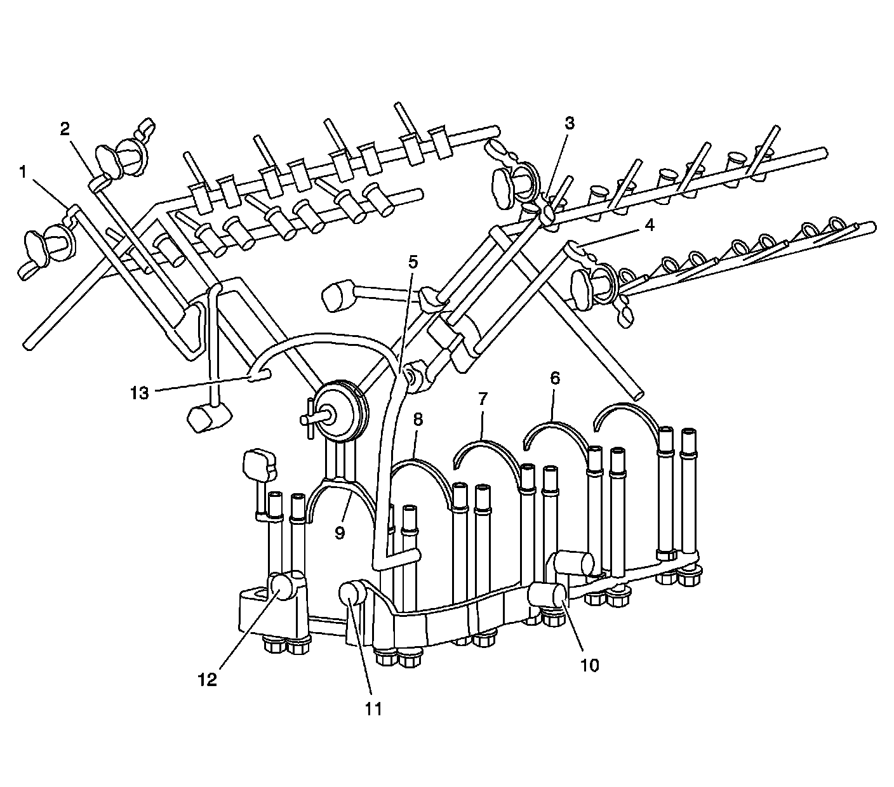

Engine Lubrication: Description and Operation
Lubrication Description

The cast aluminum oil pan is used as a structural member of the powertrain by connecting the oil pan and the engine to the flywheel housing. The oil pan incorporates an oil baffle plate and seals to the lower crankcase with a gasket. The oil pan also provides mounting for an oil level sensor.
The oil sump pickup is fastened to the lower crankcase and oil manifold by a bolt and nut to one stud-headed main bearing bolt. A gasket seals this joint on the suction side of the oil system. The engine oil pump is a gerotor design mounted to the lower crankcase behind the engine front cover by 3 mounting bolts. Drive for the gerotor elements is provided by the clamp load of the harmonic dampener and bolt. As the pump rotates, oil is drawn from the sump through the sump pickup to a channel cast into the lower crankcase. The oil is then directed to the pump inlet cavity (12) on the lower crankcase front face. Oil compressed by the pump re-enters the lower crankcase distribution channel through the pump outlet cavity (11) opposite the inlet. A portion of the pump output is diverted via an internal passage to the oil pump inlet to provide a pressure seal at the crankcase interface.
The oil pump outlet channel in the lower crankcase routes the oil to the oil outlet tube for the camshaft position actuator system and the oil filter circuit connections on the, front/left, side of the lower crankcase.
The cast aluminum oil filter adapter is fastened to the crankcase with 3 bolts. The inlet and return (10) passages are sealed with a gasket. The adapter contains the oil pressure switch and a non-serviceable bypass valve. The oil filter bypass valve routes oil directly from the filter inlet to the filter outlet if the filter becomes plugged.
Filtered oil re-enters the crankcase distribution channels and is first directed to the main bearings (6-9). Cross drilled passages in the crankshaft in turn provide oil for the connecting rod bearings and provide splash oiling for the cylinder walls. The lower crankcase distribution channel also connects with passages in the upper crankcase to provide oil to the overhead camshafts and valve lifters. This passage (9), beside the number one bearing, also provides oil for the 3 hydraulic chain tensioners as well as lubrication for the camshaft drive intermediate shaft ultimately lubricating the camshaft chains via oil splash.
Designed into the upper crankcase behind the camshaft drive intermediate shaft is a chamber that feeds 2 passages in the upper crankcase. Each passage directs oil flow up to the cylinder block deck through the cylinder head gasket and into each cylinder head. The oil passage in each cylinder head that feeds the valve train system has a pressed-in restrictor. The orifice within the restrictor is 3 mm (0.1181 in). The restrictor ensures proper oil flow to the valve train and thereby ensures suitable oil flow from the oil pump to the camshaft position actuator system. After passing through the restrictor the oil enters a cross drilled passage that feeds the 2 valve train oil passages that rub the length of the cylinder head. Each valve train passages delivers oil to each set of exhaust and intake camshaft bearings along with the corresponding stationary hydraulic lifters (SHLAs).
Oil returns to the sump either through the camshaft chain area or by way of cast oil drain back passages on the outside walls of the cylinder heads, upper and lower crankcases and oil pan. The lubrication system also includes a baffle, attached by the main bearing bolts, and channels oil thrown from the crankshaft back into the oil sump.
Oil to operate the camshaft position actuator system is supplied by the oil outlet tube located under the timing chain drive system. The oil outlet tube is sealed to the front of the engine block next to the oil pump with an O-ring. Oil travels up through the tube and is filtered by an integral screen. Oil is distributed by the oil outlet tube to both sides of the engine block just below the engine block deck (5, 13). A chamber within the block directs oil up 2 passages through the engine block deck and into 2 passages in each cylinder head. Oil supplied to the front camshaft bearing cap groove (1-4) supplies oil to passages drilled into the front camshaft journal. Oil passes through the center of the camshaft and into the camshaft position actuator oil control valve. The spool valve within the camshaft position actuator oil control valve directs the oil in and out of the camshaft position actuator. The spool valve is actuated by a magnetic field created by the camshaft position actuator magnet. The camshaft position actuator magnet is mounted to the camshaft position actuator housing bolted onto the front of each cylinder head. Oil pressure applied to either side of the internal vanes of the camshaft position actuator allows the ECM to vary the valve timing between the exhaust and intake camshafts.